5
IMAGES
- How to add images to pages
- Choosing the right format
- Optimizing images for the web
There are many reasons why you might want to add an image to a web page: you might want to include a logo, photograph, illustration, diagram, or chart.
There are several things to consider when selecting and preparing images for your site, but taking time to get them right will make it look more attractive and professional. In this chapter you will learn how to:
- Include an image in your web pages using HTML
- Pick which image format to use
- Show an image at the right size
- Optimize an image for use on the web to make pages load faster
You can also use CSS to include images in your pages using the background-image property, which you will meet on pages 413-420.
CHOOSING IMAGES FOR YOUR SITE
A picture can say a thousand words, and great images help make the difference between an average-looking site and a really engaging one.
Images can be used to set the tone for a site in less time than it takes to read a description. If you do not have photographs to use on your website, there are companies who sell stock images; these are images you pay to use (there is a list of stock photography websites below). Remember that all images are subject to copyright, and you can get in trouble for simply taking photographs from another website.
If you have a page that shows several images (such as product photographs or members of a team) then putting them on a simple, consistent background helps them look better as a group.
IMAGES SHOULD…
- Be relevant
- Convey information
- Convey the right mood
- Be instantly recognisable
- Fit the color palette
STOCK PHOTOS
ONLINE EXTRA
We have provided an online gallery that helps you choose the right image for your website. You can find it in the tools section of the site accompanying this book.
STORING IMAGES ON YOUR SITE
If you are building a site from scratch, it is good practice to create a folder for all of the images the site uses.
As a website grows, keeping images in a separate folder helps you understand how the site is organized. Here you can see an example of the files for a website; all of the images are stored in a folder called images.
On a big site you might like to add subfolders inside the images folder. For example, images such as logos and buttons might sit in a folder called interface, product photographs might sit in a page called products, and images related to news might live in a folder called news.
If you are using a content management system or blogging platform, there are usually tools built into the admin site that allow you to upload images, and the program will probably already have a separate folder for image files and any other uploads.
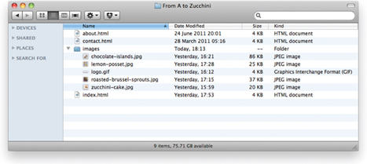
ADDING IMAGES
<img>
To add an image into the page you need to use an <img> element. This is an empty element (which means there is no closing tag). It must carry the following two attributes:
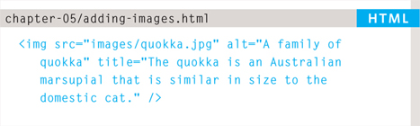
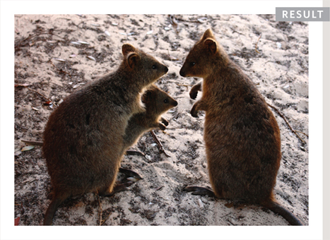
src
This tells the browser where it can find the image file. This will usually be a relative URL pointing to an image on your own site. (Here you can see that the images are in a child folder called images — relative URLs were covered on pages 83-84).
alt
This provides a text description of the image which describes the image if you cannot see it.
title
You can also use the title attribute with the <img> element to provide additional information about the image. Most browsers will display the content of this attribute in a tootip when the user hovers over the image.
The text used in the alt attribute is often referred to as alt text. It should give an accurate description of the image content so it can be understood by screen reader software (used by people with visual impairments) and search engines.
If the image is just to make a page look more attractive (and it has no meaning, such as a graphic dividing line), then the alt attribute should still be used but the quotes should be left empty.
HEIGHT & WIDTH OF IMAGES
You will also often see an <img> element use two other attributes that specify its size:
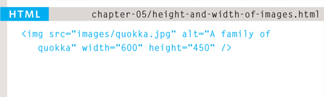
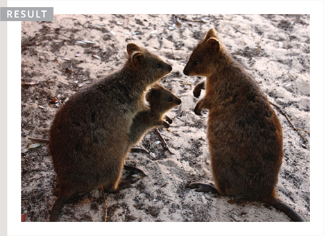
height
This specifies the height of the image in pixels.
width
This specifies the width of the image in pixels.
Images often take longer to load than the HTML code that makes up the rest of the page. It is, therefore, a good idea to specify the size of the image so that the browser can render the rest of the text on the page while leaving the right amount of space for the image that is still loading.
The size of images is increasingly being specified using CSS rather than HTML — see pages 409-410 for more information about this.
WHERE TO PLACE IMAGES IN YOUR CODE
Where an image is placed in the code will affect how it is displayed. Here are three examples of image placement that produce different results:
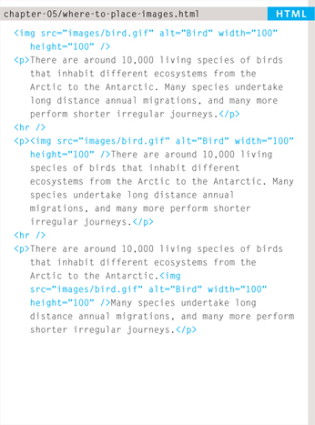
- BEFORE A PARAGRAPH
The paragraph starts on a new line after the image.
- INSIDE THE START OF A PARAGRAPH
The first row of text aligns with the bottom of the image.
- IN THE MIDDLE OF A pARAGRApH
The image is placed between the words of the paragraph that it appears in.
Where you place the image in the code is important because browsers show HTML elements in one of two ways:
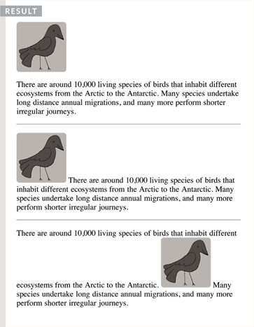
Block elements always appear on a new line. Examples of block elements include the <h1> and <p> elements.
If the <img> is followed by a block level element (such as a paragraph) then the block level element will sit on a new line after the imageas shown in the first example on this page.
Inline elements sit within a block level element and do not start on a new line. Examples of inline elements include the <b>, <em>, and <img> elements.
If the <img> element is inside a block level element, any text or other inline elements will flow around the image as shown in the second and third examples on this page.
Block and inline elements are discussed in greater depth on pages 185-186.
OLD CODE: ALIGNING IMAGES HORIZONTALLY
align
The align attribute was commonly used to indicate how the other parts of a page should flow around an image. It has been removed from HTML5 and new websites should use CSS to control the alignment of images (as you will see on pages 411-412).
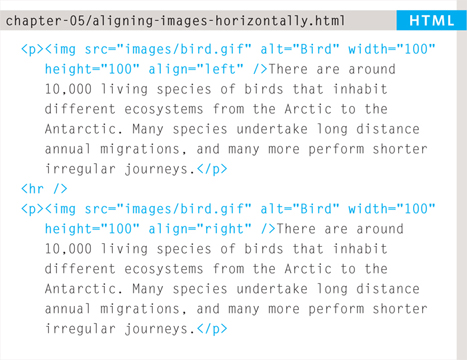
I have discussed it here because you are likely to come across it if you look at older code, and because some visual editors still insert this attribute when you indicate how an image should be aligned.
The align attribute can take these horizontal values:
left
This aligns the image to the left (allowing text to flow around its right-hand side).
right
This aligns the image to the right (allowing text to flow around its left-hand side).
This looks a lot neater than having one line of text next to the image (as shown on the previous example).
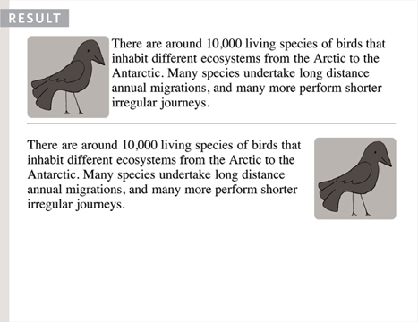
When you give the align attribute a value of left, the image is placed on the left and text flows around it.
When you give the align attribute a value of right, the image is placed on the right and the text flows around it.
When text flows right up to the edge of an image it can make it harder to read. You will learn how to add a gap between text and images on pages 313-314 using the CSS padding and margin properties.
OLD CODE: ALIGNING IMAGES VERTICALLY
As you saw on the last page, the align attribute is no longer used in HTML5, but it is covered here because you may see it used in older websites and it is still used in the code created by some visual editors.
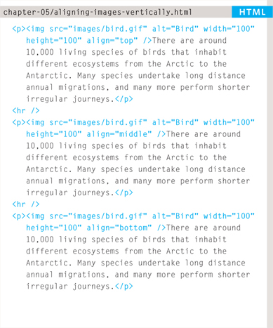
You can see how to use CSS to achieve the same effects on pages 285-286.
There are three values that the align attribute can take that control how the image should align vertically with the text that surrounds it:
top
This aligns the first line of the surrounding text with the top of the image.
middle
This aligns the first line of the surrounding text with the middle of the image.
bottom
This aligns the first line of the surrounding text with the bottom of the image.
The value of top places the first line of text near the top of the image and subsequent lines of text appear under the image.
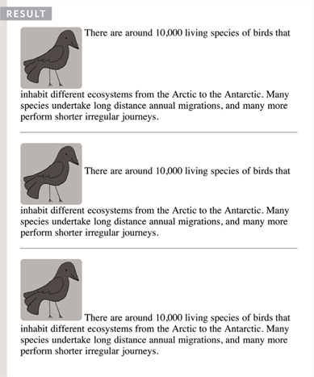
The value of middle places the first line of text near the vertical middle of the image and subsequent lines of text appear under the image.
The value of bottom places the first line of text near the bottom of the image and subsequent lines of text under the image.
When text flows right up to the edge of an image it can make it harder to read. You will learn how to add a gap between text and images on pages 313-314 using the CSS padding and margin properties.
If you would like all of the text to wrap arond the image (rather than just one line of text), you should use the CSS float property discussed on pages 370-372.
In older code, you may see the align attribute used with the values left or right to achieve the same effect (as described on the previous page), although its use is no longer recommended.
THREE RULES FOR CREATING IMAGES
There are three rules to remember when you are creating images for your website which are summarized below. We go into greater detail on each topic over the next nine pages.

SAVE IMAGES IN THE RIGHT FORMAT
Websites mainly use images in jpeg, gif, or png format. If you choose the wrong image format then your image might not look as sharp as it should and can make the web page slower to load.

SAVE IMAGES AT THE RIGHT SIZE
You should save the image at the same width and height it will appear on the website. If the image is smaller than the width or height that you have specified, the image can be distorted and stretched. If the image is larger than the width and height if you have specified, the image will take longer to display on the page.

USE THE CORRECT RESOLUTION
Computer screens are made up of dots known as pixels. Images used on the web are also made up of tiny dots. Resolution refers to the number of dots per inch, and most computer screens only show web pages at 72 pixels per inch. So saving images at a higher resolution results in images that are larger than necessary and take longer to download.
TOOLS TO EDIT & SAVE IMAGES
There are several tools you can use to edit and save images to ensure that they are the right size, format, and resolution.
The most popular tool amongst web professionals is Adobe Photoshop. (In fact, professional web designers often use this software to design entire sites.) The full version of Photoshop is expensive, but there is a cheaper version called Photoshop Elements which would suit the needs of most beginners.
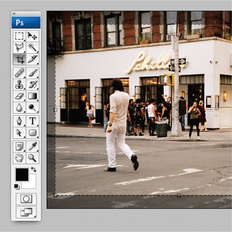
OTHER SOFTWARE
Adobe Fireworks
Pixelmator
PaintShop Pro
ONLINE EDITORS
ONLINE EXTRA
Watch videos that demonstrate how to resize images and save them in the correct format using both of these applications.
Whenever you have many different colors in a picture you should use a JPEG. A photograph that features snow or an overcast sky might look like it has large areas that are just white or gray, but the picture is usually made up of many different colors that are subtly different.
When a picture has an area that is filled with exactly the same color, it is known as flat color. Logos, illustrations, and diagrams often use flat colors. (Note that photographs of snow, sky, or grass are not flat colors, they are made up of many subtly different shades of the same color and are not as suited to GIF or PNG format.)
IMAGE DIMENSIONS
The images you use on your website should be saved at the same width and height that you want them to appear on the page.
For example, if you have designed a page to include an image that is 300 pixels wide by 150 pixels tall, the image you use should be 300 × 150 pixels. You may need to use image editing tools to resize and crop the image. When sourcing images, it is important to understand how you can alter the dimensions of an image; imagine that you had designed a web page to include an image that is 300 pixels wide by 150 pixels tall:
ONLINE EXTRA
Visit the tools section of the website accompanying this book to watch a video guide to resizing images in Photoshop and GIMP.
REDUCING IMAGE SIZE
You can reduce the size of images to create a smaller version of the image.
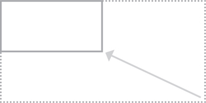
Example: If your image is 600 pixels wide and 300 pixels tall, you can reduce the size of the image by 50%.
Result: This will create an image that is quicker to download.
INCREASING IMAGE SIZE
You can't increase the size of photos significantly without affecting the image quality.
Example: If your image is only 100 pixels wide by 50 pixels tall, increasing the size by 300% would result in poor quality.
Result: The image will look blurry or blocky.
CHANGING SHAPE
Only some images can be cropped without losing valuable information (see next page).
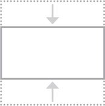
Example: If your image is 300 pixels square, you can remove parts of it, but in doing so you might lose valuable information.
Result: Only some images can be cropped and still make sense.
CROPPING IMAGES
When cropping images it is important not to lose valuable information. It is best to source images that are the correct shape if possible.
PORTRAIT
Here you can see an illustration of a giraffe that is best suited to appearing in portrait.
LANDSCAPE
If we crop this illustration to make it landscape we lose the head and feet.
If we add extra space to the left and right of the illustration the background is not continued.
LANDSCAPE
Here you can see an illustration of an elephant that is best suited to appearing in landscape.
PORTRAIT
If we crop this illustration to make it portrait we lose the trunk and the hindquarters.
If we add extra space to the top and bottom of the illustration the background is not continued.
IMAGE RESOLUTION
Images created for the web should be saved at a resolution of 72 ppi. The higher the resolution of the image, the larger the size of the file.
JPGs, GIFs, and PNGs belong to a type of image format known as bitmap. They are made up of lots of miniature squares. The resolution of an image is the number of squares that fit within a 1 inch × 1 inch square area.
Images appearing on computer screens are made of tiny squares called pixels. A small segment of this photograph has been magnified to show how it is made up of pixels. The web browsers on most desktop computers display images at a resolution of 72 pixels per inch (ppi). Images in print materials (such as books and magazines) are made up of tiny circles called dots. These images are usually printed at a resolution of 300 dots per inch (dpi).
For this image:
JPEG at 300 dpi = 1,526kb
JPEG at 72 ppi = 368kb
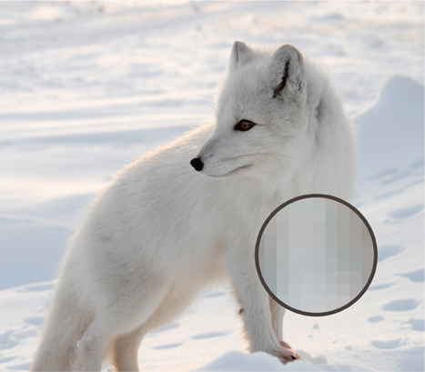
Due to the fact that computer displays are capped at a resolution of 72 ppi, using images on the web with a higher resolution will not result in better image quality — only in larger file sizes, which will increase the time needed to load them and therefore slow down viewing of your web pages.
VECTOR IMAGES
Vector images differ from bitmap images and are resolution-independent. Vector images are commonly created in programs such as Adobe Illustrator.
When an image is a line drawing (such as a logo, illustration, or diagram), designers will often create it in vector format. Vector formatted images are very different to bitmap images.
Vector images are created by placing points on a grid, and drawing lines between those points. A color can then be added to “fill in” the lines that have been created.
The advantage of creating line drawings in vector format is that you can increase the dimensions of the image without affecting the quality of it.
The current method of using vector images for display on websites involves saving a bitmap version of the original vector image and using that.
Scalable Vector Graphics (SVG) are a relatively new format used to display vector images directly on the web (eliminating the need to create bitmap versions of them), however its use is not yet widespread.
ANIMATED GIFS
Animated GIFs show several frames of an image in sequence and therefore can be used to create simple animations.
Below you can see the individual frames that make up an animated GIF that shows an orange dot revolving around a circle — like the kind of animation you might see when a web page is loading.
Some image editing applications such as Adobe Photoshop allow you to create animated GIFs. There are several tutorials about how to do this on the web. There are also several websites that allow you to upload the graphics for the individual frames and create the animated GIF for you.
IT IS IMPORTANT TO REMEMBER:
Each extra frame of the image increases the size of the file, and can therefore add to the time it takes for an image to download (and web users do not like waiting a long time for images to download).
Because GIFs are not an ideal format for displaying photographs, animated GIFs are really only suitable for simple illustrations.
Some designers frown on animated GIFs because they remember a lot of amateur web designers overusing them in the 1990's.

TRANSPARENCY
Creating an image that is partially transparent (or “see-through”) for the web involves selecting one of two formats:
TRANSPARENT GIF
If the transparent part of the image has straight edges and it is 100% transparent (that is, not semi-opaque), you can save the image as a GIF (with the transparency option selected).
PNG
If the transparent part of the image has diagonal or rounded edges or if you want a semi-opaque transparency or a drop-shadow, then you will need to save it as a PNG.
Transparent PNGs are not fully supported in older browsers, most notably Internet Explorer 6 (IE6). There is some JavaScript you can use to get around this issue. The details of this script can be found in the tools section of the website accompanying this book.
EXAMINING IMAGES ON THE WEB
CHECKING THE SIZE OF IMAGES
If you are updating a website, you might need to check the size of an existing image before creating a new one to replace it. This can be achieved by right-clicking on the image and making a selection from the pop-up menu that appears. (Mac users will need to hold down the control key and click rather than right-click.)
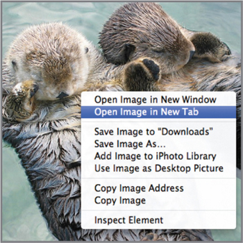
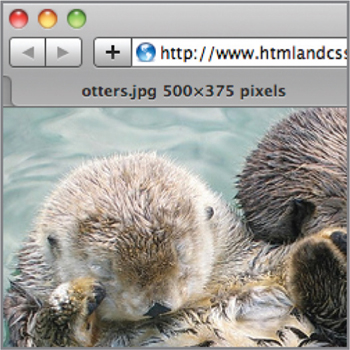
DOWNLOADING IMAGES
If you want to download images from a website, you can do so by accessing the same pop-up menu. (Please remember however that all images online are subject to copyright and require explicit permission to reuse.)
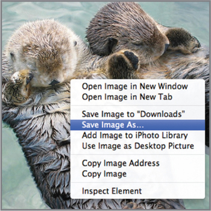
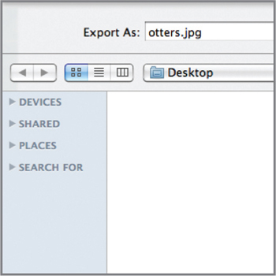
On the left you can see how to check the size of images and how to download them using Safari. Below is a brief overview of what to select in the pop-up menu to perform these functions in various browsers.
CHROME
Size: Open Image in New Tab
Size appears in new tab
Download: Save Image As
FIREFOX
Size: View Image Info
Size appears in pop-up window
Download: Save Image As
INTERNET EXPLORER
Size: Properties
Size appears in pop-up window
Download: save Image
SAFARI
Size: Open Image in New Tab
Size appears in title bar
Download: save Image As
HTML5: FIGURE AND FIGURE CAPTION
<figure>
Images often come with captions. HTML5 has introduced a new <figure> element to contain images and their caption so that the two are associated.
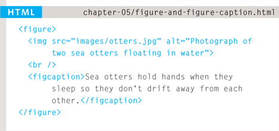
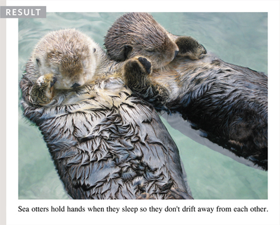
You can have more than one image inside the <figure> element as long as they all share the same caption.
<figcaption>
The <figcaption> element has been added to HTML5 in order to allow web page authors to add a caption to an image.
Before these elements were created there was no way to associate an <img> element with its caption.
Older browsers that do not understand HTML5 elements simply ignore the new elements and display the content of them.
In this example, the logo is a GIF because it uses flat colors, while the photographs are JPEGs. The main photo is placed inside the HTML5 <figure> element and has its own caption.
The alt attribute on each image provides a description for those using screen readers and the title attribute provides additional information. (This is shown in the tooltip.)
This example does not use the height, width, or align attributes as these are being phased out and you are encouraged to use CSS properties instead.
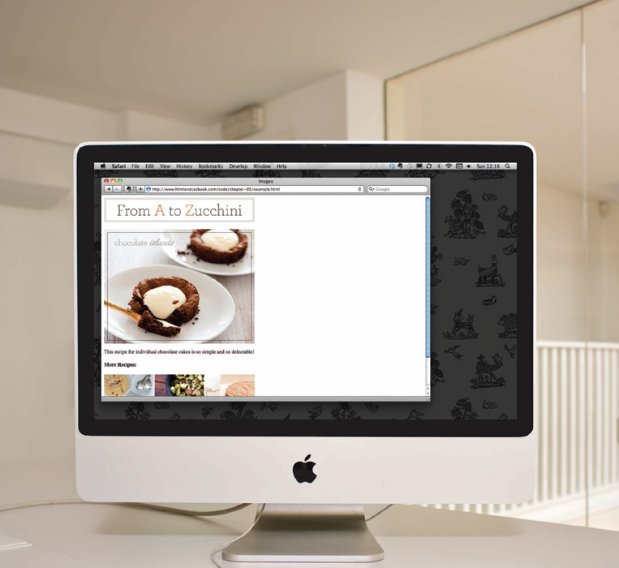
EXAMPLE IMAGES
<html> <head> <title>Images</title> </head> <body> <h1> <img src=“images/logo.gif” alt=“From A to Zucchini” /> </h1> <figure> <img src=“images/chocolate-islands.jpg” alt=“Chocolate Islands” title=“Chocolate Islands Individual Cakes” /> <p> <figcaption> This recipe for individual chocolate cakes is so simple and so delectable! </figcaption> </p> </figure> <h4>More Recipes:</h4> <p> <img src=“images/lemon-posset.jpg” alt=“Lemon Posset” title=“Lemon Posset Dessert” /> <img src=“images/roasted-brussel-sprouts.jpg” alt=“Roasted Brussel Sprouts” dtitle=“Roasted Brussel Sprouts Side Dish” /> <img src=“images/zucchini-cake.jpg” alt=“Zucchini Cake” title=“Zucchini Cake No Frosting” /> </p> </body> </html>
SUMMARY IMAGES
- The <img> element is used to add images to a web page.
- You must always specify a src attribute to indicate the source of an image and an alt attribute to describe the content of an image.
- You should save images at the size you will be using them on the web page and in the appropriate format.
- Photographs are best saved as JPEGs; illustrations or logos that use flat colors are better saved as GIFs.